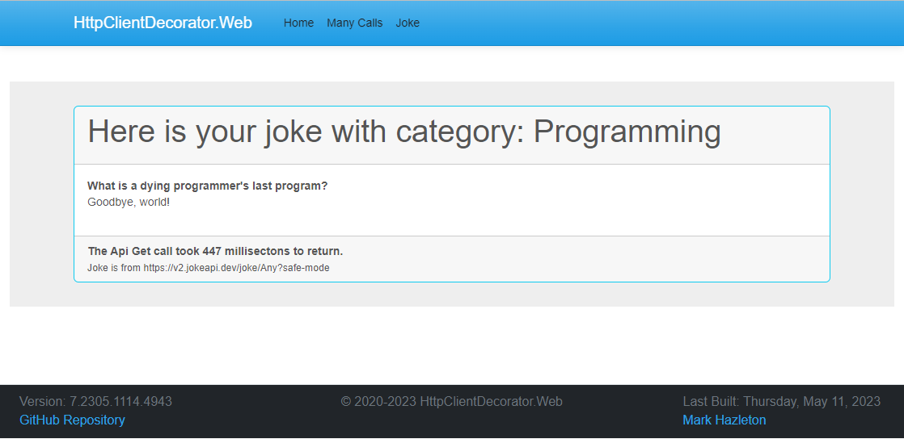

Decorator Design Pattern:
The Decorator Design Pattern is a structural design pattern that allows behavior to be added to an individual object, either statically or dynamically, without affecting the behavior of other objects from the same class. This pattern works by dynamically wrapping objects in a series of decorator objects that add new functionality to the original object. This pattern provides a flexible alternative to sub-classing and is especially useful when you want to add a single feature to an object, rather than an entire hierarchy of features.
The decorator pattern involves creating a base class/interface that defines the basic behavior and then defining one or more decorator classes that add additional behavior to the base class/interface. Each decorator class wraps an instance of the base class/interface and provides its implementation of the additional behavior.
The current version of the web application is hosted on Azure App Service.
- What is a Design Pattern?
- Design patterns are solutions to common software design problems that have been discovered, refined, and documented by experienced software developers over time. The concept of design patterns was first introduced in the book "Design Patterns: Elements of Reusable Object-Oriented Software" by the "Gang of Four" (Erich Gamma, Richard Helm, Ralph Johnson, and John Vlissides) in 1994. This book identified 23 design patterns that were widely used in object-oriented software development. Since then, many other design patterns have been discovered and documented by the software development community. The use of design patterns has become an important part of software engineering, enabling developers to write code that is more maintainable, reusable, and scalable.
- What is HTTP?
- Hypertext Transfer Protocol (a.k.a. HTTP), is the protocol used for communication between a client and a server over the internet. It is the foundation of data communication for the World Wide Web. HTTP is a request-response protocol, meaning that a client sends a request to a server, and the server responds with a message containing the requested information. HTTP messages consist of headers and a message body, which can contain data such as HTML, images, or JSON. By understanding HTTP, developers can create more efficient and effective web applications.
- What is an HTTP Client?
- In basic terms, an HTTP client is a software component that allows your program to send HTTP requests to a server and receive HTTP responses from the server. It is used to interact with web-based applications and APIs that use the HTTP protocol.
- What is HttpClient Class?
- 'HttpClient' is a class in the System.Net.Http namespace that provides a high-level API for making HTTP requests. It enables you to send HTTP requests and receive HTTP responses and provides several features to make it easy to work with HTTP-based services. It provides methods for reading the response and processing the response data. The HttpClient wraps the lower-level functionality available on each platform where it runs. This means that it provides a consistent, platform-independent implementation for processing HTTP requests while taking advantage of platform-specific features where available.
- What is Telemetry?
- Telemetry is the collection, transmission, and analysis of data related to the performance and usage of an application. Telemetry helps us to monitor the performance of an application and can be used to identify and troubleshoot issues, as well as to understand how an application is being used.
Let us explore how to use the decorator design pattern to add telemetry to an HttpClient in C#. By the end of this activity, you'll have a good understanding of the decorator pattern and how to use it to add telemetry to an HttpClient.
Full Souce code for this post is available on GitHub: HttpClientDecoratorPattern
The Interfaces
The decorator pattern uses an Interface for both the concrete and decorator classes. For this example, we will use the following interfaces:
- IHttpGetCallService
-
This interface defines the methods for making a request to a URL and returning the response data using generics.
public interface IHttpGetCallService { Task<HttpGetCallResults<T>> GetAsync<T>(HttpGetCallResults<T> callResults); } - IHttpGetCallResults
-
This interface defines the properties for the response from the HTTP call.The implementation of this interface is the class, HttpGetCallResults<T>, a generic class that is used to store the results (response)of an HTTP Request call. It has properties to store the completion date and time, elapsed time in milliseconds, error message (if any), iteration number, number of retries, status path, and results of the HTTP Response. The class also has a property to store the unique identifier for the record, which is auto-generated.
public interface IHttpGetCallResults<T> { DateTime? CompletionDate { get; set; } long ElapsedMilliseconds { get; set; } string? ErrorMessage { get; set; } int Id { get; set; } int Iteration { get; set; } string RequestPath { get; set; } T? ResponseResults { get; set; } int Retries { get; set; } }
Service Implementations
In the context of the Decorator Design Pattern, there are two types of implementations: the concrete implementation and the decorator implementation.
In other words, the concrete implementation provides the core functionality of the object, while the decorator implementation adds extra behavior and functionality to the object without changing its core functionality. The decorator implementation is interchangeable with the concrete implementation, meaning that both can be used interchangeably in the code, making it easier to extend the functionality of an object without having to modify the original implementation.
The Concrete Implementation
The concrete implementation is the original implementation of the object that is being decorated. It provides the basic functionality and behavior of the object.
The concrete implementation method is defined as follows:
public async Task<HttpGetCallResults> GetAsync<T>(HttpGetCallResults callResults)
{
if (callResults == null)
{
throw new ArgumentNullException(nameof(callResults),"The parameter 'callResults' cannot be null.");
}
if (string.IsNullOrWhiteSpace(callResults.GetPath))
{
throw new ArgumentException("The URL path specified in 'callResults' cannot be null or empty.", nameof(callResults));
}
try
{
using var httpClient = _clientFactory.CreateClient();
var request = new HttpRequestMessage(HttpMethod.Get, callResults.GetPath);
var response = await httpClient.SendAsync(request);
response.EnsureSuccessStatusCode();
var statusResults = await response.Content.ReadAsStringAsync();
try
{
callResults.GetResults = JsonSerializer.Deserialize<T>(statusResults);
}
catch (Exception ex)
{
_logger.LogCritical("HttpGetCallService:GetAsync:DeserializeException", ex.Message);
callResults.GetResults = JsonSerializer.Deserialize<dynamic>(statusResults);
}
}
catch (Exception ex)
{
_logger.LogCritical("HttpGetCallService:GetAsync:Exception", ex.Message);
}
return callResults;
}
The advantage of using a generic model of HttpGetCallResults<T> instead of HttpGetCallResults is that it allows you to specify the type of the expected response data, T, at the time of making the GET request.
By using a generic model, I can take advantage of compile-time type checking, which helps to ensure that the code using the response data is correct and to avoid unexpected runtime errors due to type mismatches. This approach will also improve the IntelliSense in Visual Studio making it easier to write and maintain the code.
For example, if you expect the response data to be a list of objects, you can define HttpGetCallResults<List<MyDataObject>>, and then access the response data as a strongly-typed list, rather than as a string or an object of an unknown type.
Overall, using a generic model of HttpGetCallResults<T> makes the code cleaner, more readable, and more maintainable, and reduces the likelihood of errors.
The Decorator Implementation
The decorator implementation is an object that wraps the concrete implementation and adds new behavior or functionality to it. The decorator implementation is responsible for forwarding calls to the original object and adding new functionality before or after the call.
To add telemetry to an HttpClient, we'll use the decorator pattern to wrap the concrete implementation in a decorator class that adds the telemetry functionality. The decorator class will implement the same Interface and act as a wrapper around the concrete implementation. This allows us to add the telemetry functionality without modifying the concrete implementation.
The decorator class is initialized with an existing implementation of the interface. When the decorator class is called, it will call the existing implementation and then add the telemetry functionality and pass the results back to the caller.
public async Task<HttpGetCallResults<T>> GetAsync<T>(HttpGetCallResults<T> callResults)
{
Stopwatch sw = new();
sw.Start();
var response = new HttpGetCallResults<T>(callResults);
try
{
response = await _service.GetAsync<T>(callResults);
}
catch (Exception ex)
{
_logger.LogCritical("Telemetry:GetAsync:Exception", ex.Message);
}
sw.Stop();
response.ElapsedMilliseconds = sw.ElapsedMilliseconds;
response.CompletionDate = DateTime.Now;
return response;
}
Putting it all together
Now that we have the implementations defined, we can configure the decorator pattern in our program.cs file. The following code snippet shows how to configure the decorator pattern in the program.cs file.
... snip ...
// Add Http Client Factory Implementation
builder.Services.AddHttpClient("HttpClientDecoratorPattern.markhazleton.com", client =>
{
client.Timeout = TimeSpan.FromMilliseconds(1500);
client.DefaultRequestHeaders.Add("Accept", "application/json");
client.DefaultRequestHeaders.Add("User-Agent", "HttpClientDecoratorPattern.markhazleton.com");
client.DefaultRequestHeaders.Add("X-Request-ID", Guid.NewGuid().ToString());
client.DefaultRequestHeaders.Add("X-Request-Source", "HttpClientDecoratorPattern.markhazleton.com");
});
// Register the decorator implementation via dependency injection.
// Wrap the base (concrete) implementation with the Telemetry decorator implementation.
builder.Services.AddSingleton<IHttpGetCallService>(serviceProvider =>
{
var logger = serviceProvider.GetRequiredService<ILogger<HttpGetCallService>>();
var telemetryLogger = serviceProvider.GetRequiredService<ILogger<HttpGetCallServiceTelemetry>>();
var httpClientFactory = serviceProvider.GetRequiredService<IHttpClientFactory>();
IHttpGetCallService baseService = new HttpGetCallService(logger, httpClientFactory);
IHttpGetCallService telemetryService = new HttpGetCallServiceTelemetry(telemetryLogger, baseService);
return telemetryService;
});
... snip ...
This is a C# Razor Page code behind for retrieving a random joke from the Joke API using an HTTP GET request. The class JokeModel inherits from the PageModel class and has an ILogger and IHttpGetCallService injected into it via the constructor using dependency injection. The OnGet method is called when the page is requested and it creates an instance of HttpGetCallResults class to store the results of the HTTP GET call. The HttpGetCallService's GetAsync method is then called to retrieve the joke from the Joke API, passing in the HttpGetCallResults instance and a CancellationToken for cancellation. The retrieved joke is then stored in the TheJoke property if the response from the API was successful. The HttpClientFacotry is injected into the IHttpGetCallService implementation via the constructor when the application starts, making it available for use in the GetAsync method.
private readonly ILogger<JokeModel> _logger;
private readonly IHttpGetCallService _service;
public HttpGetCallResults<Joke> JokeResult { get; set; } = default!;
public Joke TheJoke { get; set; } = new Joke();
public JokeModel(ILogger<JokeModel> logger, IHttpGetCallService getCallService)
{
_logger = logger;
_service = getCallService;
}
/// <summary>
/// This method retrieves a random joke from the Joke API
/// </summary>
public async Task OnGet(CancellationToken ct = default)
{
JokeResult = new HttpGetCallResults<Joke>();
if (JokeResult == null)
{
_logger.LogError("JokeResult is null");
throw new Exception("JokeResult is null");
}
JokeResult.RequestPath = "https://v2.jokeapi.dev/joke/Any?safe-mode";
JokeResult = await _service.GetAsync(JokeResult, ct).ConfigureAwait(false);
if (_service == null)
{
_logger.LogError("_service is null");
throw new NullReferenceException(nameof(_service));
}
if (JokeResult?.ResponseResults is null)
{
_logger.LogError("jokeResult.ResponseResults is null");
TheJoke = new Joke()
{
error = true
};
}
else
{
_logger.LogInformation("Good Response from Joke API");
TheJoke = JokeResult.ResponseResults;
}
}Additional Use Cases
In addition to this telemetry decorator pattern implementation for the HTTP client, there are several other common use cases for the decorator pattern in this context. Some of these include:
- Logging:
- Adding logging to your HTTP client can be useful for debugging and auditing purposes. A logging decorator can be used to automatically log requests and responses, including details such as request/response headers, status codes, and payloads.
- Caching:
- Adding caching to your HTTP client can improve performance by reducing the number of requests that need to be made to the server. A caching decorator can be used to automatically cache responses and serve them from the cache when possible, rather than making a new request to the server.
- Retry calls via Polly:
- In some cases, it may be desirable to automatically retry failed requests. The Polly library provides a convenient way to add retry logic to your HTTP client by wrapping the client in a decorator that uses a configurable policy to determine when and how to retry failed requests.
These additional decorator pattern implementations can be combined with the basic decorator pattern implementation described earlier to create a powerful and flexible HTTP client with a wide range of capabilities.
Conclusion
The Decorator Design Pattern is a powerful pattern that provides a flexible and dynamic way to add behavior and functionality to individual objects without affecting the behavior of other objects from the same class. This pattern offers a more efficient alternative to sub-classing and is especially useful when you want to add a single feature to an object, rather than an entire hierarchy of features.
In this article, we explored how to use the decorator pattern to add telemetry to an HttpClient in C#. By wrapping an HttpClient instance with telemetry-related decorators, we were able to easily collect data related to the performance and usage of the HTTP requests being made. By implementing two interfaces, IHttpGetCallService and IHttpGetCallResults, we were able to define the methods for making an HTTP request to a URL and returning the response data, and also defining the properties for the response from the HTTP call.
We also discussed the different types of implementations in the context of the decorator pattern, including the concrete implementation and the decorator implementation. The concrete implementation provides the core functionality of the object, while the decorator implementation adds extra behavior and functionality to the object without changing its core functionality. The decorator implementation is interchangeable with the concrete implementation, making it easier to extend the functionality of an object without having to modify the original implementation.
Overall, the decorator pattern is a powerful tool for extending the functionality of objects, and it can be used in a wide range of scenarios. By applying the principles of the decorator pattern, you can create more efficient and effective applications that are better able to meet the needs of your users.